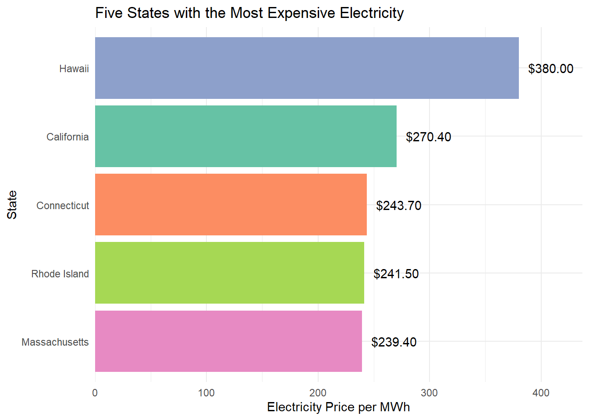
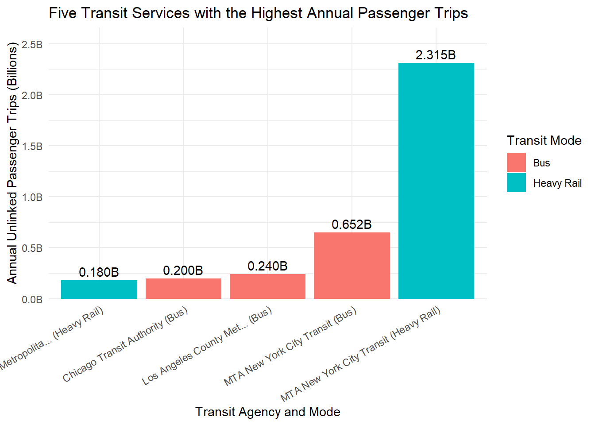
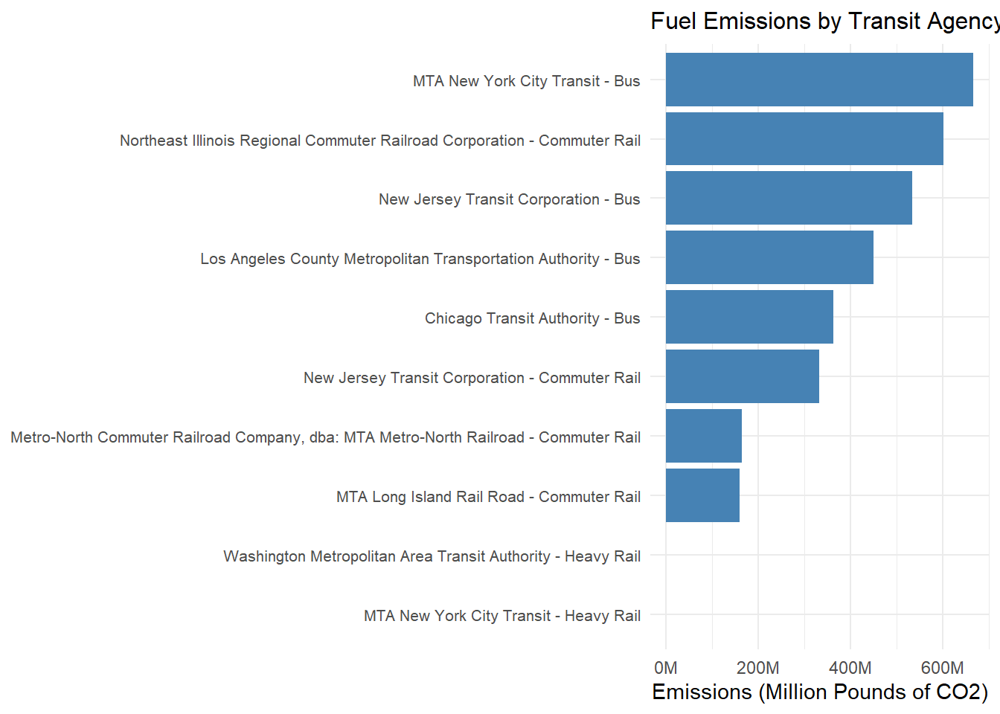
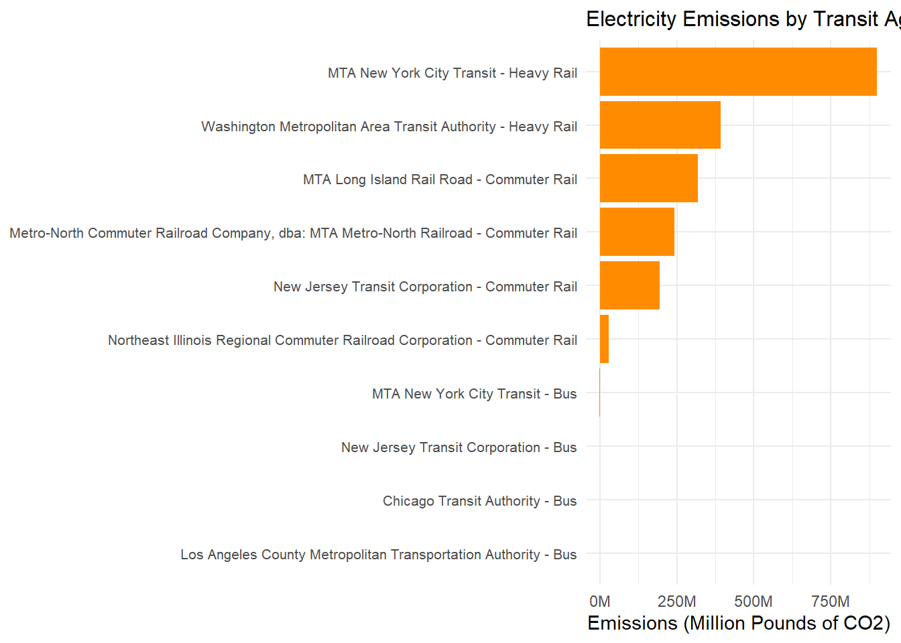
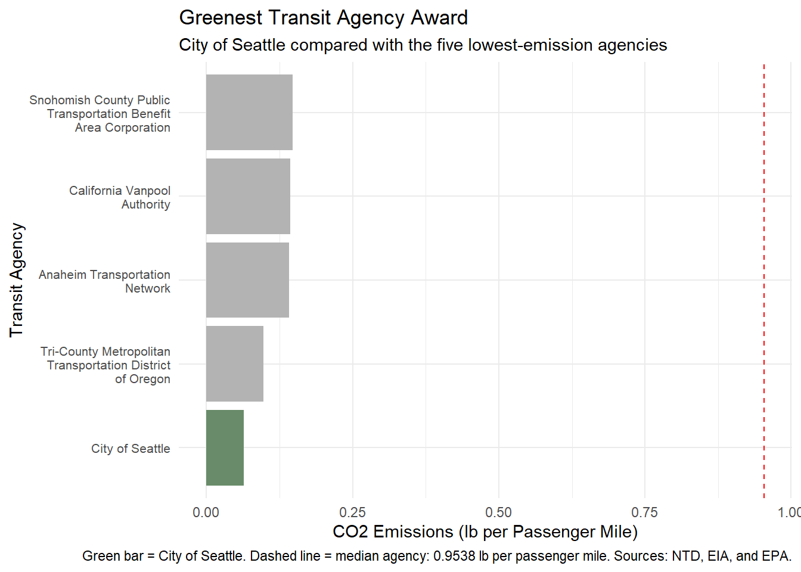
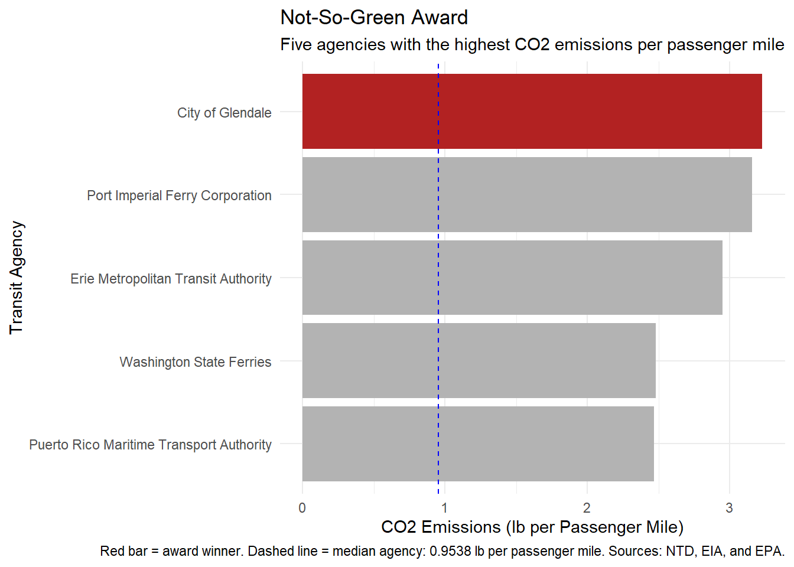

The objective of this project is to evaluate the environmental impact of public transit agencies across the United States and identify which agencies are most effective at reducing emissions. Using data from the National Transit Database and the Energy Information Administration, this analysis examines fuel and electricity consumption, passenger ridership, and CO2 emissions.
Data Acquisition
The Energy Information Administration provides state electricity information, including CO2 emissions and electricity prices. The National Transit Database provides information about transit agencies, including their energy consumption, fuel usage, and passenger ridership. These datasets will be used together to compare the environmental impact of public transit agencies.
Data Acquisition - 2025 Annual Database Energy Consumption
load_ntd_energy <-function(){library(readxl)library(httr2)library(tidyverse)library(fs)# Create 'data/mp02' directory if not already present DATA_DIR <- fs::path("data", "mp02") fs::dir_create(DATA_DIR, recurse=TRUE) NTD_ENERGY_FILE <- fs::path(DATA_DIR, "2025_ntd_energy.xlsx")if(!fs::file_exists(NTD_ENERGY_FILE)){library(httr2)request("https://www.transit.dot.gov/") |>req_url_path("sites","fta.dot.gov","files","2026-09","2025 Energy Consumption_260806.xlsx") |>req_headers(`User-Agent`="Mozilla/5.0 (Macintosh; Intel Mac OS X 10.15; rv:149.0) Gecko/20100101 Firefox/149.0") |>req_perform(NTD_ENERGY_FILE) }if(file.info(NTD_ENERGY_FILE)$size <1e4){cat("I was unable to download the NTD Energy File. Please try again.\n")stop("Download failed. Please delete the corrupted file by running `unlink('data/mp02/2025_ntd_energy.xlsx')` and try again.") } to_numeric_fill_0 <-function(x){ x <-if_else(x =="-", NA, x)replace_na(as.numeric(x), 0) }read_excel(NTD_ENERGY_FILE) |>select(-c(`Reporter Type`, `Reporting Module`, `Gallons of Other Fuel`, `Other Fuel Description`)) |>mutate(across(-c(`Agency Name`, `Mode`,`TOS`), to_numeric_fill_0)) |>group_by(`NTD ID`, `Mode`, `Agency Name`) |>summarize(across(where(is.numeric), sum), .groups ="keep") |>mutate(ENERGY =sum(c_across(c(where(is.numeric))))) |>filter(ENERGY >0) |>select(-ENERGY) |>ungroup()}NTD_ENERGY <-load_ntd_energy()
Data Acquisition - 2025 Service by Agency
load_ntd_service <-function(){library(httr2)library(tidyverse)library(fs)# Create 'data/mp02' directory if not already present DATA_DIR <- fs::path("data", "mp02") fs::dir_create(DATA_DIR, recurse=TRUE) NTD_SERVICE_FILE <- fs::path(DATA_DIR, "2025_ntd_service.csv")if(!fs::file_exists(NTD_SERVICE_FILE)){library(httr2)request("https://data.transportation.gov/resource/4fir-qbim.csv") |>req_url_query(`$query`=paste("SELECT `_5_digit_ntd_id` AS `NTD_ID`", "`max_agency` AS `AGENCY`","`max_reporter_type` AS `reporter_type`","`max_organization_type` AS `organization_type`","`max_city` AS `city`","`max_state` AS `state`","`mode`","`type_of_service`","`max_primary_uza_code` as `uza_code`","`max_primary_uza_name` as `uza_name`","`max_primary_uza_area_sq_miles` as `uza_sq_miles`","`max_primary_uza_population` as `uza_population`","`max_service_area_sq_miles` as `service_area_sq_miles`","`max_service_area_population` as `service_area_population`","`questionable_record` as `flagged_likely_inaccurate`","`sum_unlinked_passenger_trips_upt` as `total_upt`","`sum_passenger_miles` WHERE caseless_one_of(`report_year`, '2025') limit 50000", sep=",")) |>req_headers(`User-Agent`="Mozilla/5.0 (Macintosh; Intel Mac OS X 10.15; rv:149.0) Gecko/20100101 Firefox/149.0") |>req_perform(NTD_SERVICE_FILE) }if(file.info(NTD_SERVICE_FILE)$size <1e4){cat("I was unable to download the NTD Service File. Please try again.\n")stop("Download failed. Please delete the corrupted file by running `unlink('data/mp02/2025_ntd_service.xlsx')` and try again.") }read_csv(NTD_SERVICE_FILE) |>mutate(flagged_likely_inaccurate =!is.na(flagged_likely_inaccurate))}NTD_SERVICE <-load_ntd_service()
Before combining the datasets, I first reviewed the information available in each table. This helped me understand the differences in electricity use, fuel consumption, and public transit activity across agencies and states.
Some transit modes were originally listed using abbreviations. I changed these abbreviations into their full names to make the tables and graphs easier to understand.
This section explores the three datasets to identify differences in electricity prices, CO2 emissions, fuel consumption, and passenger ridership. The results provide an initial understanding of how energy use and public transportation vary across states and transit agencies.
EIA Questions
The following questions examine electricity prices and CO2 emissions across the United States. This helps identify which states have more expensive electricity and which have cleaner or dirtier electricity sources.
Which 5 states have the most expensive retail electricity?
# Finds the five states with the highest electricity pricesmost_expensive <- EIA_SEP_REPORT |>arrange(desc(electricity_price_MWh)) |>slice_head(n =5)most_expensive
CO2_MWh primary_source electricity_price_MWh generation_MWh state
1 1426 Petroleum 380.0 9160979 Hawaii
2 407 Natural gas 270.4 214191383 California
3 541 Natural gas 243.7 44761412 Connecticut
4 828 Natural gas 241.5 9777026 Rhode Island
5 936 Natural gas 239.4 20914890 Massachusetts
abbreviation
1 HI
2 CA
3 CT
4 RI
5 MA
Which 5 states have the most expensive retail electricity?
# Creates a bar graph ggplot(most_expensive,aes(x =reorder(state, electricity_price_MWh),y = electricity_price_MWh,fill = state)) +geom_col() +geom_text(aes(label =sprintf("$%.2f", electricity_price_MWh)),hjust =-0.2) +coord_flip() +labs(title ="Five States with the Most Expensive Electricity",x ="State",y ="Electricity Price per MWh" ) +scale_fill_brewer(palette ="Set2") +scale_y_continuous(expand =expansion(mult =c(0, 0.15))) +theme_minimal() +theme(legend.position ="none")

Source: U.S. Energy Information Administration (EIA), State Electricity Profiles.
Answer: Hawaii had the highest electricity price at $380.00per MWh, followed by California at $270.40 per MWh. Connecticut, Rhode Island, and Massachusetts also had some of the highest electricity prices. This shows that electricity costs vary significantly across states, which may affect the operating costs of public transit agencies that rely on electricity.
Which 5 states have the ‘dirtiest’ electricity mix?
# Finds the five states with the highest CO2 emissions per MWh dirtiest_states <- EIA_SEP_REPORT |>arrange(desc(CO2_MWh)) |>slice_head(n =5) |>select(state, CO2_MWh)dirtiest_states
state CO2_MWh
1 West Virginia 1912
2 Kentucky 1744
3 Wyoming 1724
4 Missouri 1456
5 Hawaii 1426
Which 5 states have the ‘dirtiest’ electricity mix?
# Creates a table.dirtiest_states |> knitr::kable(col.names =c("State", "CO2 Emissions (lbs/MWh)"),caption ="Five States with the Dirtiest Electricity Mix" )
Five States with the Dirtiest Electricity Mix
State
CO2 Emissions (lbs/MWh)
West Virginia
1912
Kentucky
1744
Wyoming
1724
Missouri
1456
Hawaii
1426
Answer: West Virginia had the highest CO2 emissions at 1,912 pounds per MWh, followed by Kentucky and Wyoming. Missouri and Hawaii also had some of the highest emissions. This suggests that these states rely more heavily on carbon-intensive sources of electricity, which can result in higher emissions for transit agencies that depend on electricity.
EIA Question 3 - On average, how many pounds of CO2 are emitted per MWh of electricity produced in the US?
# # Calculates the weighted average of CO2 emissions across all 50 states.weighted_average <- EIA_SEP_REPORT |>summarize(average_CO2 =weighted.mean( CO2_MWh, generation_MWh,na.rm =TRUE ) )weighted_average
average_CO2
1 784.8565
Answer: The weighted average of CO2 emissions across the United States was approximately 784.86 pounds per MWh of electricity generated. This calculation accounts for differences in electricity generation between states, rather than treating every state equally. This provides a national benchmark that can be used later to estimate emissions from transit agencies’ electricity consumption.
New York vs Texas Code
# Compares CO2 emissions in New York and Texas to determine how much cleaner New York's electricity mix is.EIA_SEP_REPORT |>filter(state %in%c("New York", "Texas")) |>select(state, CO2_MWh)
state CO2_MWh
1 New York 537
2 Texas 823
New York vs Texas Code
823/537
[1] 1.532588
Answer: New York’s electricity mix produces approximately 537 pounds of CO2 per MWh, compared to Texas at 823 pounds per MWh. This means Texas produces about 1.53 times more CO2 per MWh than New York. This shows that electricity sources can have a significant impact on transit emissions, depending on the state where an agency operates.
NTD Energy Question
This section examines how much fuel public transit agencies consume and which fuel sources are most commonly used. Comparing fuel consumption helps identify agencies that rely more heavily on different energy sources.
Five Transit Agencies Fuel Usage and Breakdown Code
# Calculates total fuel consumption for each agency and identifies the five agencies with the highest usage.agency_fuel <- NTD_ENERGY |>mutate(total_gallons =rowSums(across(starts_with("Gallons of")),na.rm =TRUE ) ) |>group_by(`Agency Name`) |>summarize(total_gallons =sum(total_gallons),.groups ="drop" ) |>arrange(desc(total_gallons)) |>slice_head(n =5)agency_fuel
# A tibble: 5 × 2
`Agency Name` total_gallons
<chr> <dbl>
1 New Jersey Transit Corporation 41721414
2 MTA New York City Transit 40816461
3 Los Angeles County Metropolitan Transportation Authority 31404951
4 Northeast Illinois Regional Commuter Railroad Corporation 26829691
5 Massachusetts Bay Transportation Authority 23452535
Five Transit Agencies Fuel Usage and Breakdown Code
# Breaks down the fuel consumption by type for the five agencies with the highest total fuel usage.fuel_breakdown <- NTD_ENERGY |>mutate(total_gallons =rowSums(across(starts_with("Gallons of")),na.rm =TRUE ) ) |>group_by(`Agency Name`) |>summarize(across(starts_with("Gallons of"), sum, na.rm =TRUE),total_gallons =sum(total_gallons),.groups ="drop" ) |>arrange(desc(total_gallons)) |>slice_head(n =5)fuel_breakdown_clean <- fuel_breakdown |>select(where(~any(. !=0)))# Removes unused fuel types and creates a formatted table showing each agency's fuel consumption.fuel_breakdown_clean |>mutate(across(where(is.numeric), round, 0)) |> knitr::kable(col.names =c("Agency","Compressed Natural Gas (Gallons)","Diesel Fuel (Gallons)","Gasoline (Gallons)","Total Gallons" ),caption ="Five Transit Agencies with the Highest Fuel Consumption" ) |> kableExtra::kable_styling(bootstrap_options =c("striped", "hover", "condensed"),full_width =FALSE,position ="center" ) |> kableExtra::row_spec(0,bold =TRUE,color ="white",background ="#1D3557" )
Five Transit Agencies with the Highest Fuel Consumption
Agency
Compressed Natural Gas (Gallons)
Diesel Fuel (Gallons)
Gasoline (Gallons)
Total Gallons
New Jersey Transit Corporation
1521492
38144027
2055895
41721414
MTA New York City Transit
6328381
30217934
4270146
40816461
Los Angeles County Metropolitan Transportation Authority
Answer: New Jersey Transit had the highest fuel consumption, with approximately 41.7 million gallons, followed closely by MTA New York City Transit with 40.8 million gallons. Los Angeles County, Northeast Illinois, and Massachusetts Bay also ranked among the top five. The table shows that diesel fuel and compressed natural gas make up much of these agencies’ fuel consumption, which will help compare their emissions in the later analysis.
NTD Energy Question 3: Which fuel source is the least commonly used by public transit agencies?
# Counts how many transit agencies use each fuel type and sorts them from least commonly used to most commonly used.fuel_usage <- NTD_ENERGY |>summarize(across(starts_with("Gallons of"),~sum(. >0, na.rm =TRUE) ) ) |>pivot_longer(everything(),names_to ="fuel_type",values_to ="agency_count" ) |>arrange(agency_count)fuel_usage
# A tibble: 9 × 2
fuel_type agency_count
<chr> <int>
1 Gallons of Bunker Fuel 0
2 Gallons of Kerosene 0
3 Gallons of Liquified Nat Gas 1
4 Gallons of Ethanol 16
5 Gallons of Bio-Diesel 45
6 Gallons of Liquified Petroleum Gas 55
7 Gallons of Compressed Natural Gas 196
8 Gallons of Diesel Fuel 513
9 Gallons of Gasoline 674
Answer: Liquefied natural gas is the least commonly used fuel source, with only 1 agency reporting its use. Bunker fuel and kerosene were not reported as being used by any transit agencies. Among the fuels that were used. Gasoline and diesel fuel were the most widely used sources. This shows that transit agencies rely on a variety of fuel sources, but some alternatives are much less commonly used than traditional fuels.
NTD Service Question
This section focuses on public transit ridership and passenger activity. By examining unlinked passenger trips and passenger miles, I can compare the amount of service provided by different transit agencies.
NTD Serive Question 1: Which five transit services have the highest annual unlinked passenger trips (UPT)?
# Finds the five transit agency and mode combinations with the highest annual passenger trips.top_upt <- NTD_SERVICE |>group_by(AGENCY, mode) |>summarize(total_upt =sum(total_upt, na.rm =TRUE),.groups ="drop" ) |>arrange(desc(total_upt)) |>slice_head(n =5)top_upt
# A tibble: 5 × 3
AGENCY mode total_upt
<chr> <chr> <dbl>
1 MTA New York City Transit Heav… 2.32e9
2 MTA New York City Transit Bus 6.52e8
3 Los Angeles County Metropolitan Transportation Authority, dba… Bus 2.40e8
4 Chicago Transit Authority Bus 2.00e8
5 Washington Metropolitan Area Transit Authority, dba: Washingt… Heav… 1.80e8
NTD Serive Question 1: Which five transit services have the highest annual unlinked passenger trips (UPT)?
# Creates a bar graph comparing the five transit services with the highest passenger trips.ggplot(top_upt,aes(x =reorder(paste0(stringr::str_trunc(AGENCY, 25), " (", mode, ")"), total_upt ),y = total_upt,fill = mode)) +geom_col() +geom_text(aes(label = scales::label_number(scale =1e-9, suffix ="B")(total_upt)),vjust =-0.4 ) +labs(title ="Five Transit Services with the Highest Annual Passenger Trips",x ="Transit Agency and Mode",y ="Annual Unlinked Passenger Trips (Billions)",fill ="Transit Mode" ) +scale_y_continuous(labels = scales::label_number(scale =1e-9, suffix ="B"),expand =expansion(mult =c(0, 0.15)) ) +theme_minimal() +theme(axis.text.x =element_text(angle =30, hjust =1) )

Source: National Transit Database (NTD), Transit Agency Data.
Answer: MTA New York City Transit’s heavy rail service had the highest number of annual passenger trips, followed by its bus service. Los Angeles County, Chicago, and Washington also ranked among the top five transit services. This shows that larger transit agencies and major rail and bus systems account for a significant amount of public transportation ridership.
NTD Service Q2: What is the average trip length for MTA New York City Transit?
# Calculates the average passenger trip length for MTA New York City Transit.mta_trip_length <- NTD_SERVICE |>filter(AGENCY =="MTA New York City Transit") |>summarize(total_passenger_miles =sum(sum_passenger_miles, na.rm =TRUE),total_upt =sum(total_upt, na.rm =TRUE),average_trip_length = total_passenger_miles / total_upt )mta_trip_length
Answer: The average passenger trip length for MTA New York City Transit was approximately 3.18 miles per trip. This means that passengers travel an average of about 3.18 miles each time they use the system. This measurement helps show how far the agency transports its passengers and will be useful when comparing emissions per passenger mile across transit agencies.
I combined the NTD and EIA data sets to connect each transit agency with its fuel consumption, electricity usage, and state emissions factors. I standardized agency IDs and transportation mode names so the data sets could be joined correctly. I also checked for missing information and filled in the missing electricity emissions factors for Washington, DC, and Puerto Rico using EPA eGRID data.
Show Code
# Calculate emissions from fuel and electricitytransit_joined <- transit_joined |>mutate(# Multiply each fuel amount by its CO2 conversion factorfuel_emissions_lb =`Gallons of Diesel Fuel`*22.45+`Gallons of Gasoline`*19.36+`Gallons of Kerosene`*21.50+`Gallons of Liquified Petroleum Gas`*12.52+`Gallons of Bunker Fuel`*24.85+`Gallons of Compressed Natural Gas`*14.83+`Gallons of Liquified Nat Gas`*9.92+`Gallons of Bio-Diesel`*20.83+`Gallons of Ethanol`*12.59+`Kilograms of Hydrogen`*0,# Convert electricity usage from kWh to MWh and calculate emissionselectricity_emissions_lb = (`Kilowatt hours of Electric Battery`+`Kilowatt hours of Electric Propulsion`) /1000* CO2_MWh,# Add fuel and electricity emissions togethertotal_emissions_lb = fuel_emissions_lb + electricity_emissions_lb,# Convert total emissions from pounds to metric tonstotal_emissions_metric_tons = total_emissions_lb /2204.62262 )
I used mutate() to calculate emissions from each fuel source by multiplying fuel consumption by its corresponding CO₂ conversion factor. I also calculated electricity emissions using each state’s emissions factor. Finally, I combined fuel and electricity emissions and converted the total from pounds into metric tons.
Show Code
# Select the ten agency and mode combinations with the highest total emissionstop_10_emissions <- transit_joined |>arrange(desc(total_emissions_metric_tons)) |>slice_head(n =10) |>mutate(# Combine agency and mode names for chart labelsagency_mode =paste(`Agency Name`, Mode, sep =" - ") )# Create a horizontal bar chart of fuel emissionsggplot(top_10_emissions,aes(x =reorder(agency_mode, fuel_emissions_lb),y = fuel_emissions_lb)) +geom_col(fill ="steelblue") +coord_flip() +# Display emissions in millions of poundsscale_y_continuous(labels = scales::label_number(scale =1e-6,suffix ="M")) +labs(title ="Fuel Emissions by Transit Agency",x =NULL,y ="Emissions (Million Pounds of CO2)" ) +theme_minimal() +theme(axis.text.y =element_text(size =8),plot.title =element_text(size =12) )

I created a bar chart showing fuel emissions for the ten agency and mode combinations with the highest total emissions. This helps identify which transit operations produce the most emissions from fuel consumption.
Show Code
# Create a horizontal bar chart of electricity emissionsggplot(top_10_emissions,aes(x =reorder(agency_mode, electricity_emissions_lb),y = electricity_emissions_lb)) +geom_col(fill ="darkorange") +coord_flip() +# Display emissions in millions of poundsscale_y_continuous(labels = scales::label_number(scale =1e-6,suffix ="M")) +labs(title ="Electricity Emissions by Transit Agency",x =NULL,y ="Emissions (Million Pounds of CO2)" ) +theme_minimal() +theme(axis.text.y =element_text(size =8),plot.title =element_text(size =12) )

I created a second bar chart showing electricity emissions for the same ten agency and mode combinations. This makes it easier to compare electricity-related emissions with fuel emissions and understand how different transit agencies use energy.
Total CO2 Emissions 8,800,638
Metric Tons of CO2 Across 1,134 transit Agency + Mode combinations.
Methodology
To calculate total CO₂ emissions, I combined data from the National Transit Database (NTD) and the Energy Information Administration (EIA). I joined the datasets using agency identification numbers and transportation modes to connect each transit agency with its state, fuel consumption, and electricity usage. I also converted abbreviated transportation modes into their full names to make the datasets consistent. For electricity emissions, I used each state’s estimated CO₂ emissions per megawatt-hour. Eleven records initially had missing electricity emissions factors, so I used EPA eGRID 2023 factors for Washington, DC and Puerto Rico. I then used mutate() in R to calculate emissions from each fuel source and electricity consumption. Finally, I added fuel and electricity emissions together to calculate total emissions for each Agency + Mode combination and converted the results from pounds to metric tons.
Findings
The analysis included 1,134 unique Agency + Mode combinations and estimated approximately 8,800,638 metric tons of total CO₂ emissions. The average emissions per combination were 7,760.70 metric tons, while the median was 1,462 metric tons. This difference suggests that some transit agencies produce considerably more emissions than others. The highest-emitting combination was MTA New York City Transit Heavy Rail, with most of its emissions coming from electricity. The fuel emissions graph also showed that bus agencies, including MTA New York City Transit and New Jersey Transit, had particularly high fuel emissions. Overall, the results show that both fuel and electricity contribute to public transportation emissions, but their impact varies depending on the agency and transportation mode.
# Find the five agencies with the lowest emissions per UPTtop_5_upt <- agency_metrics_large_enough |>arrange(emissions_per_upt) |>slice_head(n =5)# Create the formatted tabletop_5_upt |>select(`Transit Agency`= agency,`Annual UPT`= total_upt,`lbs CO2 / UPT`= emissions_per_upt ) |> gt::gt() |> gt::tab_header(title ="Most Efficient Transit Agencies",subtitle ="Lowest CO2 Emissions per UPT, 2025" ) |> gt::fmt_number(columns =`Annual UPT`,decimals =0 ) |> gt::fmt_number(columns =`lbs CO2 / UPT`,decimals =4 ) |> gt::tab_source_note(source_note ="Sources: NTD, EIA, and EPA. Agencies with at least 1 million UPT." )|> gt::tab_options(heading.background.color ="#17365D",row.striping.background_color ="#DCEEFF" ) |> gt::tab_style(style = gt::cell_fill(color ="#BBD7F0"),locations = gt::cells_column_labels() )
Most Efficient Transit Agencies
Lowest CO2 Emissions per UPT, 2025
Transit Agency
Annual UPT
lbs CO2 / UPT
City of Seattle
2,292,743
0.0575
Anaheim Transportation Network
8,284,155
0.2018
City of Portland
4,111,090
0.2459
Tri-County Metropolitan Transportation District of Oregon
65,782,710
0.4032
MTA New York City Transit
3,014,773,373
0.5827
Sources: NTD, EIA, and EPA. Agencies with at least 1 million UPT.
Show CO2 per Passenger Mile Ranking Code
# Find the five agencies with the lowest emissions per passenger miletop_5_miles <- agency_metrics_large_enough |>arrange(emissions_per_passenger_mile) |>slice_head(n =5)# Create the formatted tabletop_5_miles |>select(`Transit Agency`= agency,`Passenger Miles`= total_passenger_miles,`lbs CO2 / Passenger Mile`= emissions_per_passenger_mile ) |> gt::gt() |> gt::tab_header(title ="Most Efficient Transit Agencies",subtitle ="Lowest CO2 Emissions per Passenger Mile, 2025" ) |> gt::fmt_number(columns =`Passenger Miles`,decimals =0 ) |> gt::fmt_number(columns =`lbs CO2 / Passenger Mile`,decimals =4 ) |> gt::tab_source_note(source_note ="Sources: NTD, EIA, and EPA. Agencies with at least 1 million UPT." )|> gt::tab_options(heading.background.color ="#17365D",row.striping.background_color ="#DCEEFF" ) |> gt::tab_style(style = gt::cell_fill(color ="#BBD7F0"),locations = gt::cells_column_labels() )
Most Efficient Transit Agencies
Lowest CO2 Emissions per Passenger Mile, 2025
Transit Agency
Passenger Miles
lbs CO2 / Passenger Mile
City of Seattle
2,063,469
0.0639
Tri-County Metropolitan Transportation District of Oregon
270,786,952
0.0979
Anaheim Transportation Network
11,789,535
0.1418
California Vanpool Authority
99,336,553
0.1435
Snohomish County Public Transportation Benefit Area Corporation
61,754,624
0.1470
Sources: NTD, EIA, and EPA. Agencies with at least 1 million UPT.
Task 7: Determine Award Winners
Calculate Greenest and Not-So-Green Award Winners
# Greenest Transit Award: lowest emissions per passenger milegreenest <- agency_metrics_large_enough |>slice_min( emissions_per_passenger_mile,n =1,with_ties =FALSE )# Not-So-Green Award: highest emissions per passenger milenot_so_green <- agency_metrics_large_enough |>slice_max( emissions_per_passenger_mile,n =1,with_ties =FALSE )# Calculate the median emissions per passenger milemedian_emissions <-median( agency_metrics_large_enough$emissions_per_passenger_mile,na.rm =TRUE)
Greenest Transit Award
Metric: CO2 emissions per passenger mile, calculated by dividing an agency’s total CO2 emissions by its total passenger miles. The agency with the lowest emissions per passenger mile wins this award because it produces the least CO2 relative to the passenger service it provides.
Not-So-Green Award
Metric: CO2 emissions per passenger mile, calculated by dividing an agency’s total CO2 emissions by its total passenger miles. The agency with the highest emissions per passenger mile wins this award because it produces the most CO2 relative to the passenger service it provides.
GTA Announces Its Green Transit Award Winners: Some Agencies Are Greener Than Others!
After comparing public transit agencies across the country, the results are in! Some agencies produced much less CO2 for the amount of passenger service they provided, while others produced considerably more. Here are the winners of this year’s GTA Transit Awards!
How Were the Winners Chosen?
We compared agencies using their CO2 emissions per passenger mile. This was calculated by dividing each agency’s total CO2 emissions by its total passenger miles. This helps show how much pollution an agency produces based on the amount of passenger service it provides.
To keep the comparison fair, we only included agencies with at least 1 million unlinked passenger trips. The median agency produced 0.9538 pounds of CO2 per passenger mile. We used this as a reference point to compare the winners with a typical transit agency.
Greenest Transit Agency Award
Winner: City of Seattle, Washington🏆
The City of Seattle won the Greenest Transit Agency Award with only 0.0639 pounds of CO2 per passenger mile. This is about 93.3% lower than the median of 0.9538 pounds. This shows that Seattle produced much less CO2 for the amount of passenger service it provided compared with a typical agency in our analysis. Looks like Seattle is doing something right!
Not-So-Green Award
Winner: City of Glendale, California 🏆
The Not-So-Green Award goes to the City of Glendale, which had the highest emissions per passenger mile among the agencies included in our analysis. Its emissions were 3.23 pounds of CO2 per passenger mile, compared with the median of 0.9538 pounds. This is about 3.4 times higher than the median agency. Since it had the highest emissions in our group, it earned the Not-So-Green Award. Hopefully, next year brings some improvements!
Figure 1: Greenest Transit Award Graph
Greenest Transit Award Graph
# Find the five agencies with the lowest emissions per passenger milegreenest_top5 <- agency_metrics_large_enough |>arrange(emissions_per_passenger_mile) |>slice_head(n =5) |>mutate(Award_Winner = agency =="City of Seattle" )# Create the chartggplot( greenest_top5,aes(x =reorder(agency, emissions_per_passenger_mile),y = emissions_per_passenger_mile,fill = Award_Winner )) +geom_col() +geom_hline(yintercept = median_emissions,linetype ="dashed",color ="red" ) +scale_fill_manual(values =c("FALSE"="gray70", "TRUE"="darkseagreen4"),guide ="none" ) +coord_flip() +scale_x_discrete(labels = \(x) stringr::str_wrap(x, width =25) ) +labs(title ="Greenest Transit Agency Award",subtitle ="City of Seattle compared with the five lowest-emission agencies",x ="Transit Agency",y ="CO2 Emissions (lb per Passenger Mile)",caption =paste("Green bar = City of Seattle. Dashed line = median agency:",round(median_emissions, 4),"lb per passenger mile. Sources: NTD, EIA, and EPA." ) ) +theme_minimal() +theme(axis.text.y =element_text(size =8) )

Figure 2: Not so Green Award Graph
Not so Green Award Graph
# Find the five agencies with the highest emissions per passenger milenot_so_green_top5 <- agency_metrics_large_enough |>arrange(desc(emissions_per_passenger_mile)) |>slice_head(n =5) |>mutate(Award_Winner = agency == not_so_green$agency[1] )# Create the chartggplot( not_so_green_top5,aes(x =reorder(agency, emissions_per_passenger_mile),y = emissions_per_passenger_mile,fill = Award_Winner )) +geom_col() +geom_hline(yintercept = median_emissions,linetype ="dashed",color ="blue" ) +scale_fill_manual(values =c("FALSE"="gray70", "TRUE"="firebrick"),guide ="none" ) +coord_flip() +labs(title ="Not-So-Green Award",subtitle ="Five agencies with the highest CO2 emissions per passenger mile",x ="Transit Agency",y ="CO2 Emissions (lb per Passenger Mile)",caption =paste("Red bar = award winner. Dashed line = median agency:",round(median_emissions, 4),"lb per passenger mile. Sources: NTD, EIA, and EPA." ) ) +theme_minimal()

Data Sources National Transit Database: https://www.transit.dot.gov/ntd
Energy Information Administration: https://www.eia.gov/electricity/
ChatGPT was used to help write the code in this project, but all non-code text was generated without the use of any Generative AI tools. Additionally, ChatGPT was used to provide additional background information on the topic and to brainstorm ideas for the final open-ended prompt.